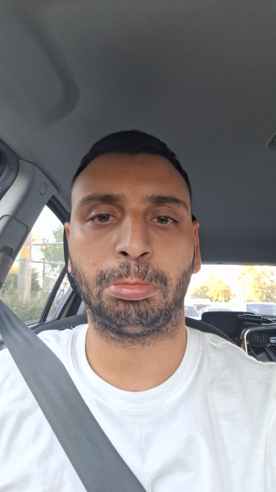

Merhaba
Ben Onur Özel, İzmirli bir istatistik mezunuyum ve şu anda Turkcell’de uzman test mühendisi ve Scrum Master olarak görev yapıyorum. Eğitim hayatımın ardından, kariyerime çeşitli teknoloji ve ürün yönetimi rollerinde başladım. Univerada ürün yöneticisi olarak görev aldıktan sonra, Netaş’ta uzman test mühendisi olarak teknik becerilerimi geliştirdim. Bu süreçte, yazılım testi ve ürün yönetimi konularında kapsamlı bir deneyim kazandım.
Bugünkü pozisyonumda, test mühendisliği ve Scrum Master rollerini üstlenerek, projelerin hem teknik hem de yönetimsel yönlerini etkin bir şekilde yönetiyorum. Teknolojik yenilikleri takip ederek, verimliliği artırmak ve projelerin zamanında tamamlanmasını sağlamak amacıyla çalışıyorum. Ayrıca, ekip içi işbirliğini güçlendirmek ve Agile metodolojilerini başarıyla uygulamak benim için öncelikli hedefler arasında yer alıyor.
Kariyerimdeki hedefim, yazılım geliştirme süreçlerinde liderlik rolünü üstlenerek, yenilikçi projelerin hayata geçirilmesine katkıda bulunmak ve teknoloji dünyasında daha etkili bir iz bırakmaktır. Teknoloji ve yönetim becerilerimi birleştirerek, hem kişisel hem de profesyonel anlamda sürekli gelişim göstermeyi amaçlıyorum.
Saygılarımla,
Onur Özel
